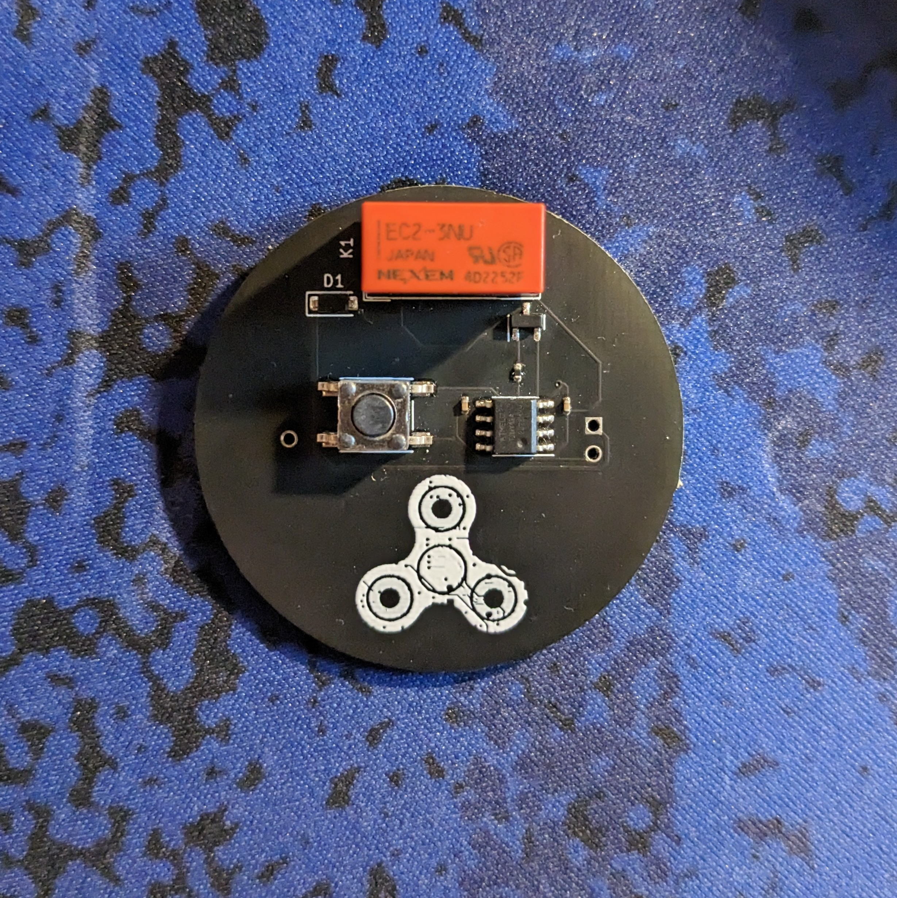

Yes, I know it’s been almost a full year since my last update. Sorry - I’ll try to not let that happen again!
Hey everyone! My last post on the E-Fidget was a quick status update on version 1. Since then, I’ve gone through 2 other versions of the main E-Fidget and two versions of its little sibling, the E-Fidget Lite.

Version 1 of the E-Fidget Lite
 Version 2 of the E-Fidget Lite
The most recent version of the E-Fidget (The E-Fidget Lite V2, if you’re
keeping count) is the most successful version so far! It uses a
LRA motor to deliver sharp and accurate haptic feedback.
As you can imagine, the cost of these PCBs adds up fast. Thankfully,
PCBWay sponsored this version of the E-Fidget. They offer fast and professional services
that you can always count on, and their support team is friendly and helpful!
Version 2 of the E-Fidget Lite
The most recent version of the E-Fidget (The E-Fidget Lite V2, if you’re
keeping count) is the most successful version so far! It uses a
LRA motor to deliver sharp and accurate haptic feedback.
As you can imagine, the cost of these PCBs adds up fast. Thankfully,
PCBWay sponsored this version of the E-Fidget. They offer fast and professional services
that you can always count on, and their support team is friendly and helpful!
Check them out at PCBWay.com
The new E-Fidget Lite has a few different modes. If you press and hold the button, it will vibrate repeatedly, a few times a second. If you press the button with arbitrary intervals between the presses, it will mimic the rhythm that you used! It takes a CR2032 coin battery. I’d estimate that it’ll last for about two weeks of light usage.
I’m looking forward to sharing this project with the world, so check back soon for more details!
Thanks for reading!